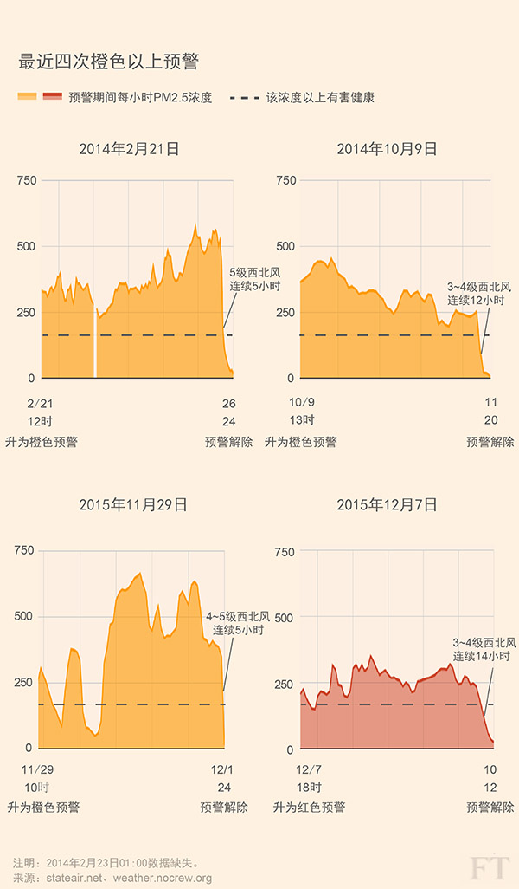
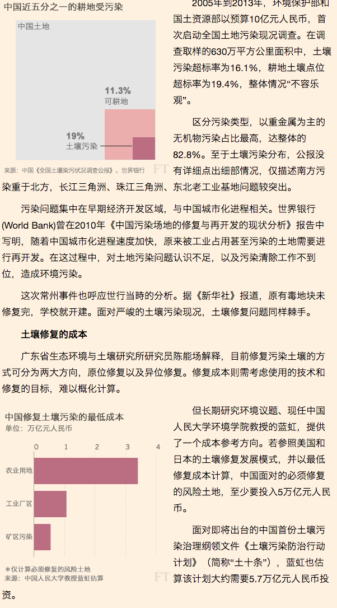
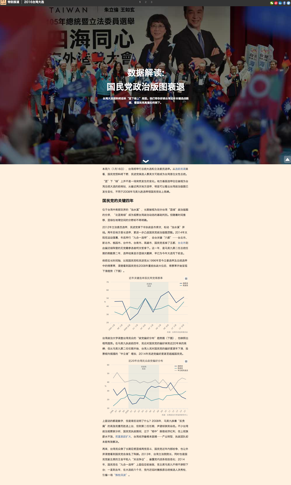

Data Journalism 101
HKBU | May 2016
@silvashih
A bit about me
Data editor at FTChinese.com of FT based in Beijing. Making data-driven stories and reporting on Taiwan.
FT interactive

coders, designers, statisticians, map-makers.
FTC team

me, 1/2 coder
In these 2 days, we will learn...
- What is data journalism?
- What is data?
- What is data visualization?
- 5 ways to keep learning by yourself.
Section 1
What is data journalism?
Tellying stories through data.
Data journalism started way before you think it did.
Why should we care about telling stories through data now?
What a data-driven story look like？
(it's not all about charts)
Section 2: Speed data-ing
where can I find the data?
- Google
- research org
- government
- collect it yourself
Quartz

data formats
machine readable
XLS (excel)

CVS
comma-seperated

TSV
tab-seperated

JSON

dirty work
google spreadsheet exercise
=IMPORTHTML(URL,"table/list", 1)
FTC
- 50% on the site are translated from the FT.com.
- 50% are editorials, Op-Eds and columns run and produced by FTC editors.
I expected my role at FTC is...
...but it's more close to
Works so far
1. Make a Chinese version of FT's work
2. Produce weekly/ biweekly data stories.
3. Produce monthly mulitmedia pieces.
1. Migrate FT's works to the FTC site.

w/ interactive team: "What is at stake at the Paris climate change conference?"

w/ graphics team: "China debt load reaches record high"
2. FTC data stories
weekly • biweekly

"Changes of words-used in China's Two Sessions official documents"

Can "red alert" saves Beijing's air?
（PM 2.5 index in 12 hours since red-alert had issued)

Can 'red alert' save Beijing's air?
（PM 2.5 index comparison in the past four alerts.)

China budget deficit on soil remeditation.

Why Taiwan's ruling KMT fails?
Why do we choose the design/framework above?
Blame the CMS!
A single, static html page is friendly to the site.
Consider the soical network enviroment.
What I've learned so far
GFW is evil. !important
DDJ in China is emerging. A lot of space to be explored.